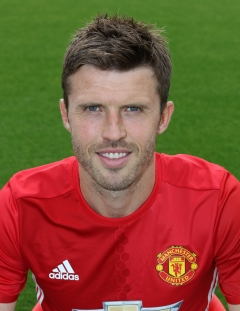

SQUAD - MIDFIELDERS
Player Profile

| Birthdate: | 15 Mar 1993 |
| Birthplace: | Lagny-sur-Marne |
| Position: | Midfielder |
| Joined United: | 08 Aug 2016 |
| Joined From: | Juventus |
| International: | France |
| United Debut: | 20 Sep 2011 v Leeds (A) |
| Appearances: | 26 |
| Goals Scored: | 4 |
№:6
Paul Pogba
Player Profile

| Birthdate: | 28 Apr 1988 |
| Birthplace: | Burgos, Spain |
| Position: | Attacking midfielder |
| Joined United: | 25 Jan 2014 |
| Joined From: | Chelsea |
| International: | Spain |
| United Debut: | 28 Jan 2014 v Cardiff City (H) |
| Appearances: | 123 |
| Goals Scored: | 31 |
№:8
Juan Mata
Player Profile
| Birthdate: | 28 Jul 1981 |
| Birthplace: | Wallsend, North Shields |
| Position: | Midfielder |
| Joined United: | 31 Jul 2006 |
| Joined From: | Tottenham Hotspur |
| International: | England |
| United Debut: | 23 Aug 2006 v Charlton (A) |
| Appearances: | 431 |
| Goals Scored: | 24 |
№:16
Michael Carrick
Player Profile
| Birthdate: | 14 Aug 1989 |
| Birthplace: | Bilbao, Spain |
| Position: | Midfielder |
| Joined United: | 26 Jun 2014 |
| Joined From: | Athletic Bilbao |
| International: | |
| United Debut: | 16 Aug 2014 v Swansea (H) |
| Appearances: | 90 |
| Goals Scored: | 14 |
№:21
Ander Herrera
Player Profile
| Birthdate: | 21 Jan 1989 |
| Birthplace: | Yerevan, Armenia |
| Position: | Midfielder |
| Joined United: | 06 Jul 2016 |
| Joined From: | Borussia Dortmund |
| International: | Armenia |
| United Debut: | 7 Aug 2016 v Leicester City (N) |
| Appearances: | 11 |
| Goals Scored: | 1 |
№:22
Mikhitaryan
Player Profile
| Birthdate: | 22 Nov 1987 |
| Birthplace: | Etterbeek, Belgium |
| Position: | Midfielder |
| Joined United: | 02 Sep 2013 |
| Joined From: | Everton |
| International: | Belgium |
| United Debut: | 14 Sep 2013 v Crystal Palace (H) |
| Appearances: | 101 |
| Goals Scored: | 11 |
№:27
Fellaini
Player Profile

| Birthdate: | 15 Dec 1992 |
| Birthplace: | Warrington, Cheshire |
| Position: | Midfielder |
| Joined United: | 01 Jul 2009 |
| Joined From: | United Academy |
| International: | England Under-21 |
| United Debut: | 16 Aug 2014 v Swansea (H) |
| Appearances: | 54 |
| Goals Scored: | 9 |
№:14
Jesse Lingard
Player Profile
| Birthdate: | 01 Aug 1984 |
| Birthplace: | Kolbermoor, Germany |
| Position: | Midfielder |
| Joined United: | 13 Jul 2015 |
| Joined From: | Bayern Munich |
| International: | Germany |
| United Debut: | 8 Aug 2015 v Tottenham (H) |
| Appearances: | 32 |
| Goals Scored: | 1 |
№:31
Bastian Schweinsteiger
Player Profile
| Birthdate: | 08 Nov 1989 |
| Birthplace: | Zellwiller, France |
| Position: | Midfielder |
| Joined United: | 13 Jul 2015 |
| Joined From: | Southampton |
| International: | France |
| United Debut: | 8 Aug 2015 v Tottenham (H) |
| Appearances: | 47 |
| Goals Scored: | 1 |
№:28
Morgan Schneiderlin